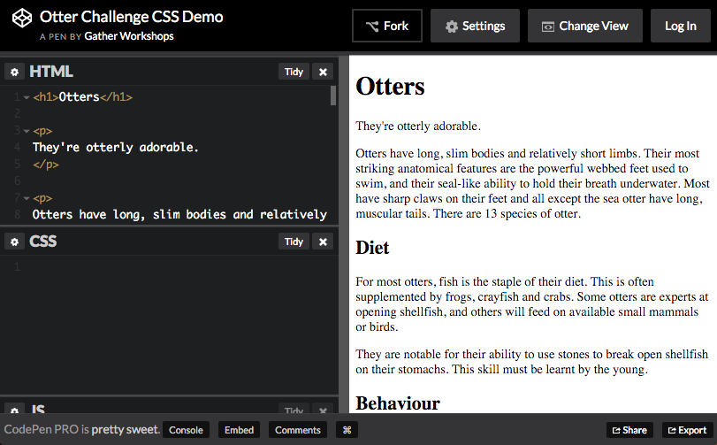

Styley Design
Making things pretty with CSS
Otter Page Design Demo
See the Pen Otter Challenge CSS Demo by Gather Workshops (@gatherworkshops) on CodePen.
In this chapter we’ll use code to apply some really slick design.
Naming Things
Find the h1 and add the class pageHeading
<h1 class="pageHeading">Otters</h1>
We can now design the heading using its class name
Open the CSS Panel

Design code is written in the CSS panel in CodePen.
Writing a Rule
.pageHeading {
color: steelblue;
}
We create one design rule for each class name we make up.
Make sure to check your spelling of “color”!
Your page heading should now be a grey-blue colour.
Font Options
.pageHeading {
color: steelblue;
font-family: Trebuchet MS;
font-size: 80px;
}
Many lines of design can be added to a single rule.
Your heading should now be large and a plain font.
Text Design Options
.pageHeading {
color: red;
font-family: Trebuchet MS;
font-size: 80px;
text-align: center;
text-shadow: 3px 3px 3px black;
}
You can also use CSS to align and decorate your text.
Your heading should be centered with a drop shadow.
Identify the Tagline
<p class="tagline">
They're otterly adorable.
</p>
Follow the same process to design the tagline under your heading.
Find the tagline paragraph and add a class name.
Create a matching design rule
.tagline {
color: purple;
font-family: Comic Sans MS;
font-size: 25px;
font-weight: bold;
text-align: center;
}
In your CSS panel, create a new rule for the tagline.
Your tagline should be big, bold, purple and Comic Sans.
Spacing Around Elements
.pageHeading {
color: red;
font-family: Trebuchet MS;
font-size: 80px;
text-align: center;
text-shadow: 3px 3px 3px black;
margin-bottom: 0;
}
.tagline {
...
margin-top: 0;
}
Move your tagline closer to your page heading
by changing the margin on both elements.
Your tagline should be much closer to your page heading.
Challenge: Design your Subheadings
Make a new design rule called subheading
and apply it to all three subheadings.
Base your subheading design on your page heading style.
Styling based on Element Type
p {
color: darkblue;
font-family: Verdana;
font-size: 16px;
line-height: 150%;
}
We can style all paragraphs at the same time.
Notice there is no dot in front of the rule name
when styling elements by their tag name!
Your paragraphs should be blue with higher line spacing.
Styling all Images
img {
margin-right: 10px;
margin-bottom: 10px;
border-style: solid;
border-width: 5px;
border-color: white;
box-shadow: 5px 5px 5px black;
}
We can use the same approach to design all images at once.
Your images should all have a white border and shadow.
Final Result
See the Pen Otter Challenge Demo by Gather Workshops (@gatherworkshops) on CodePen.
Your own output should now look something like this.
Stuff We Covered
- Rule Structure
A design rule is made up of a target and a bunch of lines of design. - Class Styles
A design rule can be applied to specific elements using a class name - Element Styles
A design rule can be applied to all elements of one kind by the element name

Styley Design: Complete!
Great, now a wee bit about layout…
Loading...